Choose your option: BlackCoin | BlackHalo (Smart Contracts Client Beta)
 Windows
Windows
 Linux
Linux
 OS X
OS X
 Android
iOS
Android
iOS
 Web Wallets
Web Wallets
 POS 2.0 Whitepaper
POS 2.0 Whitepaper
Latest wallet update: 8th of December, 2014 (v1.1.2.1)
 More Information
More InformationInnovación
Proof of Stake aporta velocidad, seguridad y eficiencia energética, por encima de la mayoría de las divisas digitales. BlackHalo client incorpora contratos inteligentes, firmas múltiples, y más.
Liberation
Al ser libre de autoridades centrales, y de los bancos, BlackCoin y BlackHalo le devuelven el poder a las personas.
Adopción
BlackCoin está logrando rápidamente el apoyo de personas, comercios y servicios por todo el mundo.
Compromiso
BlackCoin cuenta con una gran comunidad de apoyo en la red, tanto de usuarios como de programadores.
Qué es BlackCoin
- A
- B
A new form of currency
BlackCoin es una moneda digital P2P con un registro de transacciones distribuido, descentralizado y público; que, al contrario de los libros de contabilidad en los bancos tradicionales, son visibles, y fácilmente inspeccionados por las personas.
La capacidad de gestionar transacciones y emitir BlackCoins adicionales está a cargo de la red de usuarios que utilizan BlackCoin. Debido a que la red de BlackCoin es operada por la gente, los propietarios de BlackCoin reciben un interés anual de 1% a través de un proceso llamado staking (Inversión).
- B
- C
Un nuevo e innovadormodo de transferir dinero
La tecnología de BlackCoin le permite a las personas enviar y recibir pagos rápidos, sencillos y seguros entre amigos, familiars y negocios en cualquier lugar del planeta. BlackCoin le posibilita controlar tus finanzas sin la necesidad de una autoridad central, o un banco.
BlackCoin es de código abierto también, lo que significa que, el programa que lo hace funcionar, está completamente disponible para ser examinado públicamente — para su tranquilidad. No existe un dueño de BlackCoin, ya que no es una entidad individual; cualquier persona puede ser parte de Blackcoin.
BlackHalo es el primer cliente funcional de contratos inteligentes de firma múltiple en el mundo! Trae muchas nuevas aplicaciones, directamente a las manos de los usuarios.
Por qué utilizar BlackCoin
BlackCoin Specs & Features
de BlackCoin Especificaciones
Datos e Informaciones tras BlackCoin
-
75 MillonesMonedas
-
Proof of Stake (Prueba de Inversión)Corta Fase de PoW
-
Uno Porcientode Interés por Inversión
-
rápidaconfirmación
-
64 segundopor Bloque
-
DificultadRedirigir Cada Bloque
BlackCoin's Características Principales
BlackCoin tiene muchas ventajas fundamentales
- Baja Inflación
BlackCoin fue ampliamente distribuida durante una corta fase de extracción de proof of work. En el futuro no se acuñarán más BlackCoins, excepto el interés annual de 1% que es pagado a los titulares de BlackCoin. - Transacciones Rápidas
En BlackCoinel proof of stake es el sistema que posibilita la velocidad relámpago de la red BlackCoin. BlackCoin es la divisa digital ideal para transacciones cara a cara, y para todas aquellas aplicaciones que valoren la velocidad. - Seguridad Blockchain
La red de BlackCoin está segura frente a los ataques que enfrentan otras divisas digitales, debido a su dependencia en operaciones de extracción a gran escala para operar sus redes.
- Ecológicamente Sólido
La red de BlackCoin no requiere el empleo de operaciones especializadas de hardware a gran escala. BlackCoin es mucho más eficiente, energéticamente, que las redes tradicionales de monedas digitales. - Comunidad Innovadora
BlackCoin cuenta con una sólida y dedicada comunidad compuesta por talentosos programadores, así como usarios que trabajan duro para conseguir que BlackCoin llegue tan lejos como se pueda. BlackHalo es el ejemplo perfecto. - Amplia Adopción Mercantil
Cada día surgen nuevos negocios y servicios en línea que aceptan a BlackCoin. Encuentre a BlackCoin pronto en más aplicaciones de puntos de venta, con adiciones recientes a CoinKite: servicios de negocios.
Cómo Empezar
Cómo empezar con BlackCoin
Basta de jerga técnica, comencemos con BlackCoin
- 1.
-
Descargue una cartera
Primeramente, Ud. necesita obtener una cartera para almacenar sus BlackCoins.
Carteras PC Carteras Web - 2.
-
Compre BlackCoins
Una vez que haya obtenido su cartera, ahora Ud. puede comprar BlackCoins directamente o intercambiarlas por Bitcoins.
Negocios Minoristas de BlackCoin:
Expresscoin (USD, CND), Anycoin Direct (EUR)Intercambios Fiduciarios (Fiat):
Bittylicious (GBP), LiteBit (EURO), LiteBit (EURO),Mercados de Intercambio de Monedas:
Bittrex, BTER, BTC38, Cryptsy, Poloni.ex - 3.
-
Invierta sus BlackCoins
Los titulares de BlackCoin reciben un interés compuesto annual de 1%, mediante un proceso llamado “staking” (inversión).
Guía de Inversión Staking -
Minería de BlackCoins
No es possible seguir extrayendo BlackCoin, pero su poder de minería puede ser usado para extraer otras monedas, intercambiarlas, y pagar en BlackCoin.
BlackCoin Pool - 4.
-
Consuma sus BlackCoins
Ahora que tiene BlackCoins Ud. puede irse de compras a muchos negocios minoristas y en red.
Ud. puede localizar negocios que aceptan BlackCoin usando estos enlaces:
BlackCoin Directory BlackCoin Map - 5.
-
Ingrese a la comunidad
Contamos con una comunidad comprometida, positiva y amigable, integrada tanto de usuarios, como de programadores de BlackCoin.
Ingrese Hoy!
BlackCoin Carteras


Ingrese a la Comunidad
Ingrese a Nuestra Comunidad
-

Reddit
-
Twitter
-
IRC
-

Facebook